TFG · App de librería multiplataforma
Aplicación de librería lista para ejecutarse en Android, Apple y escritorio con Kotlin Multiplatform.
Ver código en GitHubDesarrollador backend junior · DAM
Construyo APIs REST y aplicaciones multiplataforma con Java, Spring Boot y Kotlin. Estudiante de Ingeniería Informática en la UHU.
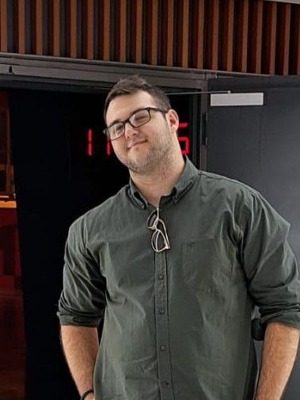
Desarrollador backend junior (DAM) y estudiante de Ingeniería Informática en la UHU, con experiencia en Java, Spring Boot, Kotlin y SQL.
En mis prácticas en el Departamento de Robótica de la Universidad de Cádiz mantuve scripts para dispositivos embebidos usando Git.
Busco una oportunidad en desarrollo backend (Java, C# o Kotlin) para aportar mis conocimientos en APIs REST y bases de datos mientras continúo mi crecimiento profesional y académico.
Aplicación de librería lista para ejecutarse en Android, Apple y escritorio con Kotlin Multiplatform.
Ver código en GitHubAPI backend del TFG, documentada con Swagger, que da servicio a la aplicación multiplataforma.
Ver código en GitHubProyecto de aprendizaje sobre autenticación y autorización con JSON Web Tokens.
Ver código en GitHub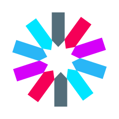
JWT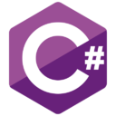
C#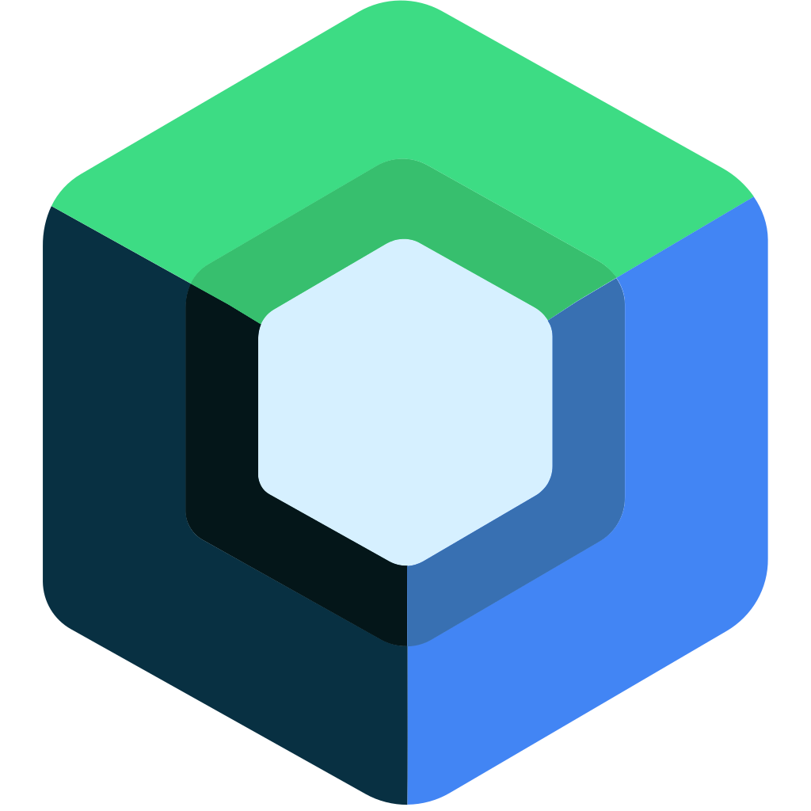
Jetpack Compose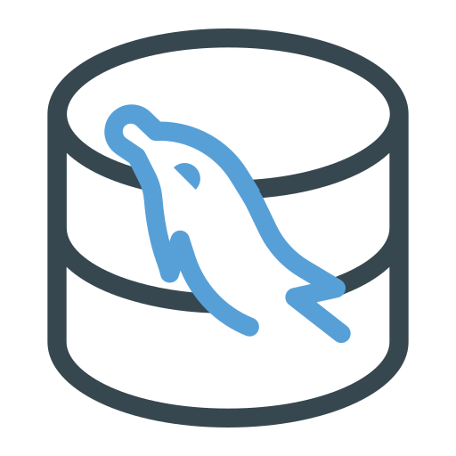
MySQL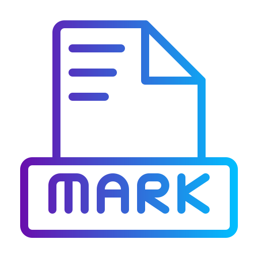
Markdown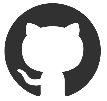
GitHub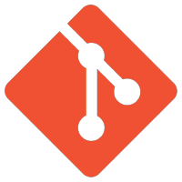
Git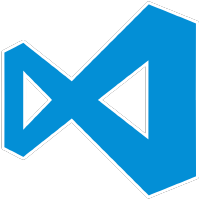
Visual Studio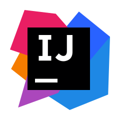
IntelliJ IDEA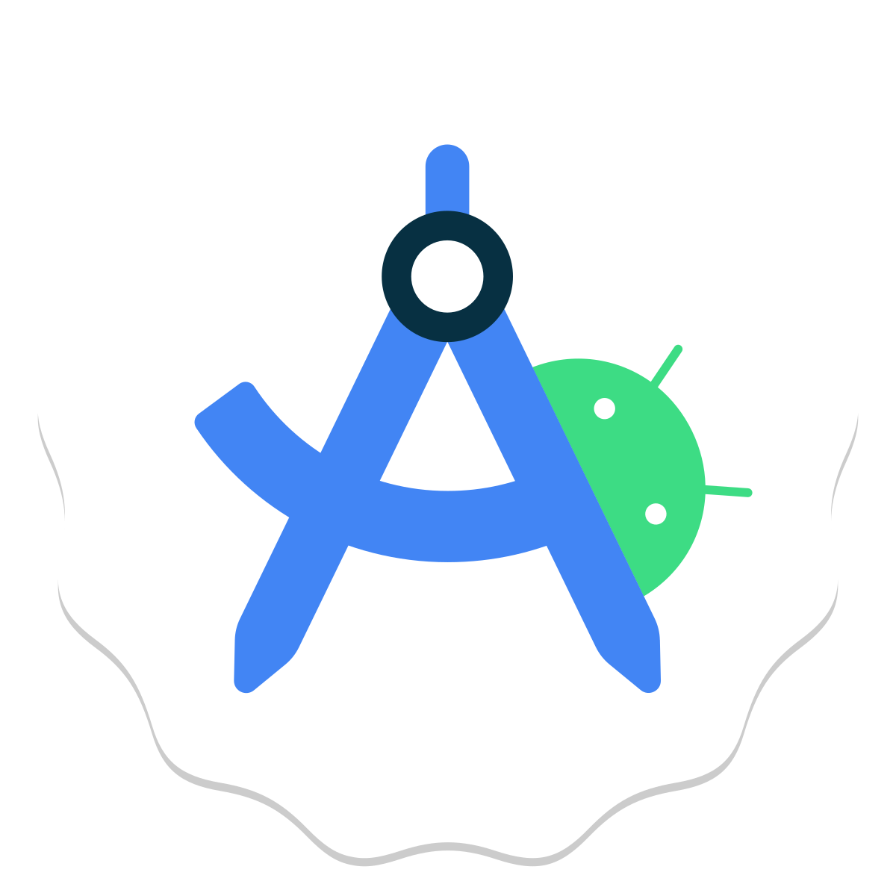
Android Studio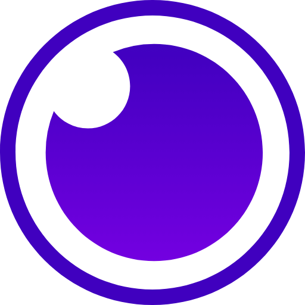
Insomnia¿Tienes una oferta o quieres hablar de un proyecto? Escríbeme y te respondo lo antes posible.